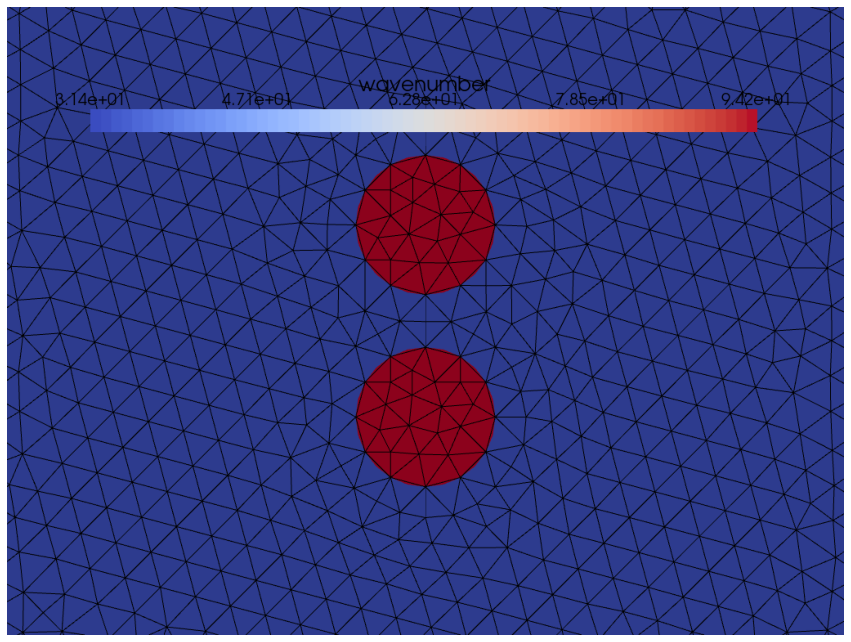
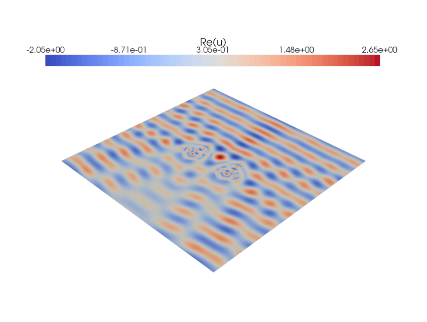
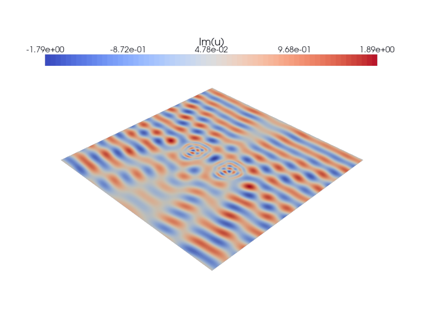
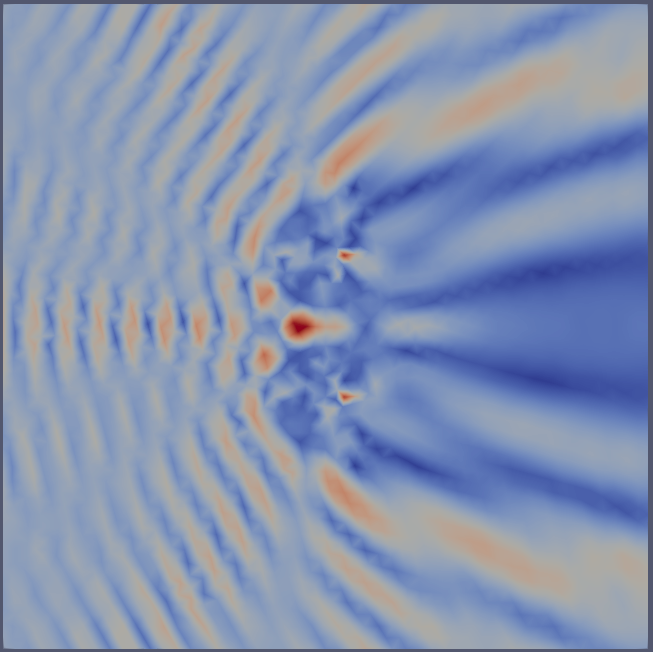
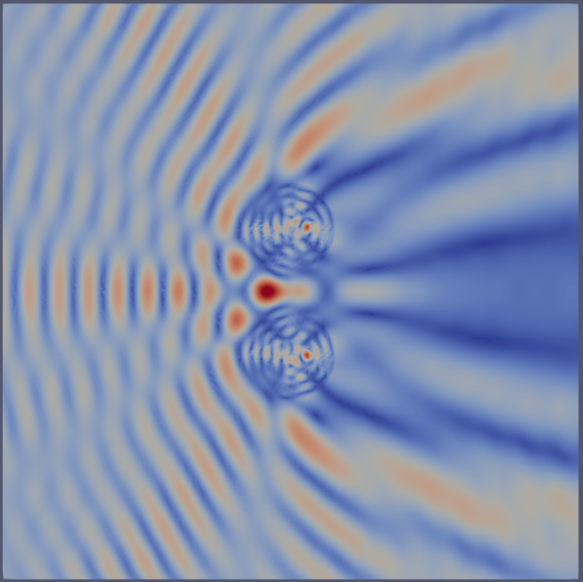

The Helmholtz equation
Contents
The Helmholtz equation#
Author: Igor A. Baratta
In this tutorial, we will learn:
How to solve PDEs with complex-valued fields,
How to import and use high-order meshes from Gmsh,
How to use high order discretizations,
How to use UFL expressions.
Problem statement#
We will solve the Helmholtz equation subject to a first order absorbing boundary condition:
where \(k\) is a pieciwise constant wavenumber, and \(g\) is the boundary source term computed as:
and \(u_i\) is the incoming plane wave.
import numpy as np
from mpi4py import MPI
import dolfinx
import ufl
This code is only meant to be executed with complex-valued degrees of freedom. To be able to solve such problems, we use the complex build of PETSc.
import sys
from petsc4py import PETSc
if not np.issubdtype(PETSc.ScalarType, np.complexfloating):
print("This tutorial requires complex number support")
sys.exit(0)
else:
print(f"Using {PETSc.ScalarType}.")
Using <class 'numpy.complex128'>.
Defining model parameters#
# wavenumber in free space (air)
k0 = 10 * np.pi
# Corresponding wavelength
lmbda = 2 * np.pi / k0
# Polynomial degree
degree = 6
# Mesh order
mesh_order = 2
Interfacing with GMSH#
We will use Gmsh to generate the computational domain (mesh) for this example. As long as Gmsh has been installed (including its Python API), DOLFINx supports direct input of Gmsh models (generated on one process). DOLFINx will then in turn distribute the mesh over all processes in the communicator passed to dolfinx.io.gmshio.model_to_mesh.
The function generate_mesh creates a Gmsh model on rank 0 of MPI.COMM_WORLD.The function generate_mesh creates a Gmsh model on rank 0 of MPI.COMM_WORLD.
from dolfinx.io import gmshio
from mesh_generation import generate_mesh
# MPI communicator
comm = MPI.COMM_WORLD
file_name = "domain.msh"
generate_mesh(file_name, lmbda, order=mesh_order)
mesh, cell_tags, _ = gmshio.read_from_msh(file_name, comm,
rank = 0, gdim = 2)
Info : Reading 'domain.msh'...
Info : 15 entities
Info : 2985 nodes
Info : 1444 elements
Info : Done reading 'domain.msh'
Material parameters#
In this problem, the wave number in the different parts of the domain depends on cell markers, inputted through cell_tags.
We use the fact that a Discontinuous Lagrange space of order 0 (cell-wise piecewise constants) has a one-to-one mapping with the cells local to the process.
W = dolfinx.fem.FunctionSpace(mesh, ("DG", 0))
k = dolfinx.fem.Function(W)
k.x.array[:] = k0
k.x.array[cell_tags.find(1)] = 3*k0
import pyvista
import matplotlib.pyplot as plt
from dolfinx.plot import create_vtk_mesh
# Start virtual framebuffer for plotting
pyvista.start_xvfb(0.5)
pyvista.set_jupyter_backend("pythreejs")
pyvista.set_plot_theme("paraview")
sargs = dict(title_font_size=25, label_font_size=20, fmt="%.2e", color="black",
position_x=0.1, position_y=0.8, width=0.8, height=0.1)
def plot_function(grid, name, show_mesh=False):
grid.set_active_scalars(name)
plotter = pyvista.Plotter()
renderer = plotter.add_mesh(grid, show_edges=False, scalar_bar_args=sargs)
if show_mesh:
V = dolfinx.fem.FunctionSpace(mesh, ("Lagrange", 1))
grid_mesh = pyvista.UnstructuredGrid(*create_vtk_mesh(V))
renderer = plotter.add_mesh(grid_mesh, style="wireframe", line_width=0.1, color="k")
plotter.view_xy()
plotter.camera.zoom(2)
img = plotter.screenshot(f"{name}.png", transparent_background=True)
plt.axis("off")
plt.gcf().set_size_inches(15,15)
fig = plt.imshow(img)

Boundary source term#
Next, we define the boundary source term, by using ufl.SpatialCoordinate. When using this function, all quantities using this expression will be evaluated at quadrature points.
n = ufl.FacetNormal(mesh)
x = ufl.SpatialCoordinate(mesh)
uinc = ufl.exp(-1j * k * x[0])
g = ufl.dot(ufl.grad(uinc), n) + 1j * k * uinc
Variational form#
Next, we can define the variational problem, using a 4th order Lagrange space. Note that as we are using complex valued functions, we have to use the appropriate inner product, see DOLFINx tutorial: Complex numbers for more information.
element = ufl.FiniteElement("Lagrange", mesh.ufl_cell(), degree)
V = dolfinx.fem.FunctionSpace(mesh, element)
u = ufl.TrialFunction(V)
v = ufl.TestFunction(V)
a = - ufl.inner(ufl.grad(u), ufl.grad(v)) * ufl.dx \
+ k**2 * ufl.inner(u, v) * ufl.dx \
- 1j * k * ufl.inner(u, v) * ufl.ds
L = ufl.inner(g, v) * ufl.ds
Linear solver#
Next, we will solve the problem using a direct solver (LU).
opt = {"ksp_type": "preonly", "pc_type": "lu"}
problem = dolfinx.fem.petsc.LinearProblem(a, L, petsc_options=opt)
uh = problem.solve()
uh.name = "u"
Postprocessing#
Visualising using PyVista#
topology, cells, geometry = create_vtk_mesh(V)
grid = pyvista.UnstructuredGrid(topology, cells, geometry)
grid.point_data["Re(u)"] = uh.x.array.real
grid.point_data["Im(u)"] = uh.x.array.imag


Post-processing with Paraview#
from dolfinx.io import XDMFFile, VTXWriter
u_abs = dolfinx.fem.Function(V, dtype=np.float64)
u_abs.x.array[:] = np.abs(uh.x.array)
XDMFFile#
# XDMF writes data to mesh nodes
with XDMFFile(comm, "out.xdmf", "w") as file:
file.write_mesh(mesh)
file.write_function(u_abs)
{kind=link}

VTXWriter#
# VTX can write higher order functions
with VTXWriter(comm, "out_high_order.bp", [u_abs]) as f:
f.write(0.0)
{kind=link}
